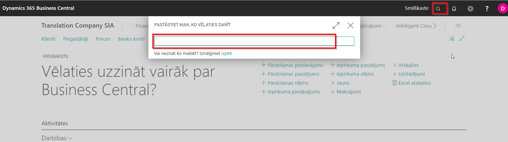
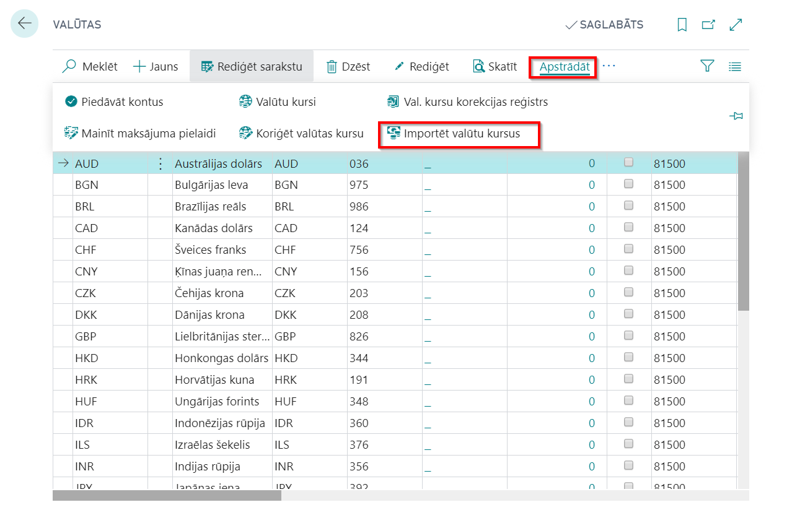
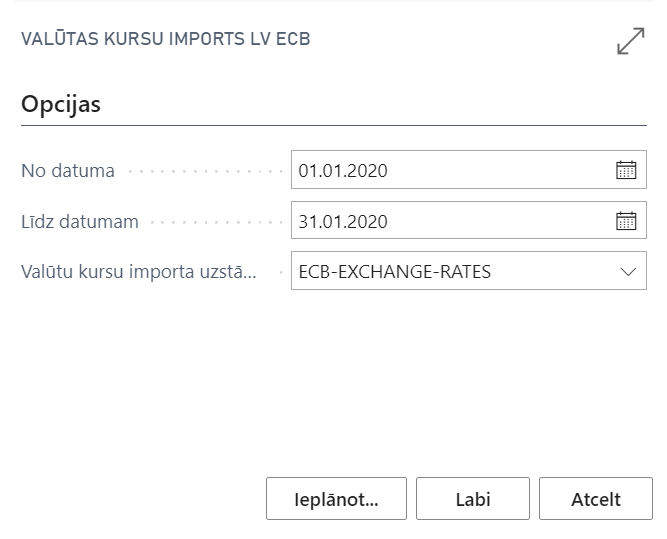

Biežāk uzdotie jautājumi
Vai ir nepieciešams specifisks Lomu centrs, lai varētu lietot aplikāciju?
Lai varētu lietot Latvian Base Localization, specifisks Lomu centrs nav nepieciešams.
Vai ir kāds pamatuzstādījumu saraksts, ko vajadzētu veikt, lai varētu sākt lietot aplikāciju?
Latvian Base Localization lietošanai nepieciešamie pamata uzstādījumi tiek izveidoti, pielāgojot konfigurācijas pakotni LV.LVI.STANDARD. Detalizētākiem instrukcijas konfigurācijas pakotnes importam ir pieejamas sadaļā Palīdzība.
Mūsu uzņēmumā nav Finanšu vadītāja - tikai izpilddirektors un grāmatvedis. Kā mums būtu jāiestata uzņēmumu informācijas sadaļa.
Finanšu vadītāja vietā iestatiet grāmatvedības darbinieku. Gadījumā, ja Galvenā grāmatveža pozīcija nav iestatīta, izdrukās šī pozīcija tiks automātiski aizstāta ar Finanšu vadītāja datiem.
Kļūdas pēc mēs ievadījām divus vienādus klientus - PVN nemaksātājus. Vai ir pieejams kāda veida kontroles mehānisms šādiem gadījumiem?
Lai arī PVN nemaksātājiem nav PVN maksātāja numurs, tiem joprojām ir arī uzņēmuma reģistrācijas numurs, ko var izmantot kontroles mehānisma iestatīšanā. Pārdošanas un ieņēmumu uzstādījumu ailītē Klienta reģ. Nr. pārbaude ir iespējams iestatīt klientu reģistrācijas numura pārbaudi, izvēloties vienu no sekojošām opcijām:
- Nav- reģistrācijas numurs netiek pārbaudīts; divas vai vairākas klientu kartiņas var tikt ievadītas ar vienādiem reģistrācijas numuriem;
- Brīdinājums – sistēma parāda brīdinājuma ziņu, ja lietotājs ievada reģistrācijas numuru, kas jau eksistē citā piegādātāja kartiņā;
- Kļūda – piegādātāja uzņēmuma reģistrācijas numuram piegādātāja karē jābūt unikālam.
Mūsu uzņēmums klientiem piegādā preces izmantojot pārvadāšanas pakalpojumus, tomēr katru reizi piegāde tiek veikta ar citu transportlīdzekli.Vai ir iespējams neizmantot pārvadātāju katalogu?
Jā, tas ir iespējams, neizmantot pārvadātāju katalogu katram transportlīdzeklim. Jūs varat ievadīt katalogā pārvadāšanas uzņēmuma datus un pārdošanas/ pirkšanas/ pārvietošanas dokumentācijā ievadīt transportlīdzekļa datus manuāli. Šajā gadījumā gatavojot dokumenta izdruku, drukāšanas opcijās izvēlaties iespēju: Drukāt pārvadātāju - No dokumenta.
Kad mēs maksājumu žurnālā gatavojam maksājuma failu, rindiņas iekrāsojas sarkanas un fails netiek izveidots. Kāds varētu būt iemesls?
Lūdzu pievērsiet uzmanību Maksājuma faila eksporta faktu lodziņam, kur sistēma ziņo par tās kontroles mehānismu konstatētajām kļūdām, kad sagatavotā informācija neatbilst bankas maksājumu noteikumiem. Visbiežākās neatbilstības ir iztrūkstoši valstu kodi un piegādātāju reģistrācijas numuri, piegādātāja kartiņās iztrukstoši SWIFT kodi un IBAN.
Mūsu uzņēmums saņem maksājumus no ārvalstu klientiem, un dažos gadījumos, kad iegrāmatojam maksājumu, mēs nenorādam ārējā maksājuma kodu. Vai ir iespējams piešķirt ārējo maksājumu kodu pēc tam - sagatavojot atskaiti?
Ja maksājuma kods nav piešķirts pirms maksājuma žurnāla iegrāmatošanas, tad diemžēl vēlāk to nav iespējams izdarīt. Šādos gadījumos grāmatojumi ir jāstornē un jāiegrāmato vēlreiz ar piešķirtiem ārējo maksājumu kodien.
Valūtas kursu pakalpojums neatjauno valūtas kursus no rītiem. Vai es varu veikt atjaunošanu manuāli?
Lai varētu lietot funkcionalitāti manuālā režīmā, nepieciešams veikt sekojošas darbības:
- Klikšķiniet uz pogas Meklēt Lapu vai Atskaiti...

- Ierakstiet Valūtas un izvēlieties tās no sadaļas Lapas un uzdevumi

- Klikšķiniet uz pogas Importēt valūtu kursus

- Definējiet Valūtas kursu importa opcijas:
- No datuma – norāda perioda sākumu, par kuru jāimportē valūtas kursi (noklusējumā tiek norādīts tekošās dienas datums)
- Līdz datumam – norāda perioda beigas, par kuru jāimportē valūtas kursus (noklusējumā tiek norādīts tekošās dienas datums)
- Valūtu kursu importa uzstādījuma kods – izvēlieties no saraksta ECB-EXCHANGE-RATES uzstādījumu kodu, kas tika ieimportēts sistēmā ar LV.LVI.STANDARD konfigurācijas pakotni.

Sagatavoju Nebanku statistikas pārskatu un izdruka neuzrāda nevienu maksājumu, ko iekļaut pārskatā, lai gan zinu, ka pārskata periodā tika saņemti maksājumi no ārvalstīm. Kādēļ tā?
Informācija pārskatā tiek saģenerēta tikai, tad ja ir norādīts ārējo maksājumu kods pirms maksājumu žurnāls tiek iegrāmatots. Ja tika iegrāmatoti ārvalstu darījumi bez norādīta ārējā maksājuma koda, tad atskaites izdruka ir tukša, jo nav datu, ko atspoguļot.
No pārdošanas pasūtījuma esam izdrukājuši un iegrāmatojuši pārdošanas priekšapmaksas rēķinu. Patreiz mums ir nepieciešams izdrukāt šo priekšapmaksas rēķinu vēlreiz, jo klients to ir pazaudējis.
Pēc tam, kad pārdošanas priekšapmaksas rēķins ir iegrāmatots, ir iespējams izdrukāt pārdošanas rēķinu no iegrāmatotajiem pārdošanas rēķiniem. Bet uz izdrukas nebūs atzīmes, ka tas ir priekšapmaksas rēķins. Saskaņā ar procesu, Pārdošanas priekšapmaksas rēķinam ir jābūt izprintētam pirms šī priekšapmaksa tiek iegrāmatota. Pārdošanas priekšapmaksas rēķins tiek grāmatots tikai tad, kad maksājums ir saņemts, un kas nodrošina iespēju izdrukāt pārdošanas priekšapmaksas rēķinu no pārdošanas pasūtījuma.
Dati Krājumu norakstīšanas aktā nesaskan ar datiem iegrāmatotā krājumu norakstīšanas aktā. Kāds varētu būt iemesls?
Kad tiek drukāti dati no neiegrāmatota žurnāla rindiņām, vienības izmaksas varētu nebūt aktualizētas. iesakam drukāt iegrāmatotu krājumu norakstīšanas aktu, lietojot papildus filtru preču grāmatas ierakstu drukāšanas opcijās.
Pamatlīdzekļu inventarizācijas akta izdrukā ir papaildus rindiņas komentāriem, bet drukāšanas opcijās nav šādas opcijas - aizpildīt komentāra rindiņas. Kā es varu pievienot komentārus?
Komentāri var tikt pievienoti saglabājot un atverot failu Word formātā.
Eksportējot bankas maksājumu failu no maksājumu žurnāla un augšupielādējot to intrnetbankā, fails tiek noraidīts dēļ saņēmēja informācijas. Kā to var labot?
Katrai bankai ir dažāds maksājuma detaļu laukā atļauto simbolu skaits. Iespējams noraidījums arī dēļ neatļautu simobu izmantošanas. Sakarā ar to, dodieties atpakaļ uz maksājumu lauku Ziņojums saņēmējam un saīsiniet tekstu vai/un izdzēsiet neatļautus simbolus. Pēc tam, kad labojumi ir veikti, maksājuma eksporta fails ir jāsaģenerē un jāeksportē vēlreiz uz internetbanku.